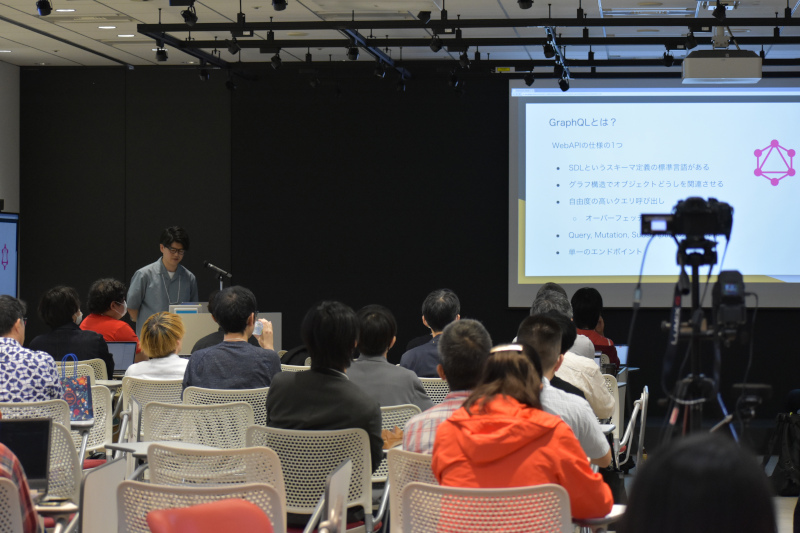

About DjangoCongress JP
DjangoCongress JP について
DjangoCongress JPは日本で開催されるDjango Webフレームワークのカンファレンスです。
DjangoCongress JPは、Djangoでアプリケーションを開発している人、Djangoを学んでいる人などDjangoに関わる全ての人が参加できます。
参加する全ての人がDjangoについて交流し、出会い、学び、楽しみ、深い理解を得ることを目的にしています。
DjangoCongress JPに参加する、発表する、スタッフとしてイベントを運営する全ての人は以下のCode Of Conduct (行動規範) を守る必要があります。
DjangoCongress JP is a conference for the Django Web framework in Japan. If you are a seasoned Django pro or just starting, DjangoCongress JP is for you.
Our goal is for attendees to meet, talk, share tips, discover new ways to use Django, and, most importantly, have FUN.
All people (attendees, speakers, and staff) attending DjangoCongress JP agree to follow our Code of Conduct.
CONFERENCE DAY
カンファレンス
開催概要 / Overview
- 日時 / Schedule
2023/10/07 (SAT)
10:00 ~ 20:30- 場所 / Venue
サイボウズ株式会社
東京都中央区日本橋2-7-1 東京日本橋タワー
Cybozu, Inc.
Tokyo Nihombashi Tower, Nihombashi 2-7-1, Chuo-ku, Tokyo,Japan
- アクセス / Access
・東京メトロ銀座線・東西線、都営地下鉄浅草線：
「日本橋駅」B6出口直通
・東京メトロ半蔵門線・銀座線：
「三越前駅」B6出口より徒歩3分
・JR：
「東京駅」八重洲北口より徒歩10分
・Tokyo Metro Ginza, Tōzai & Toei Asakusa Lines：
Nihonbashi - Outside the B6 exit
・Tokyo Metro Hanzomon, Ginza Lines：
Mitsukoshimae - 3 min. walk from the B6 exit
・JR：
Tokyo - 10 min. walk from Yaesu North exit
Access Map- 参加人数 / Participants
TBD (about 100) people
- 公式ハッシュタグ / Twitter Hash Tag
PROGRAM
プログラム
開場・受付 / Registration
オープニング / Opening
Djangoアプリケーション運用のリアル：問題発生から可視化、最適化への道
吉田花春
アプリケーションを運用していると、システムエラー発生時の原因特定の困難さや、突然のリソース使用率上昇や調査するための準備で時間がかかる、アラートが多くて開発の時間が取れないなど様々な課題に直面します。
これらの課題を解決するために「可観測性（オブザーバビリティ）」を高める取り組みを実施しました。
本発表では実際に取り組んだことを共有し、日常業務の負荷を削減してサービスの改善に専念できるようになっていた内容についてお話します。
Djangoテンプレートエンジンを使いこなそう！
Shinya Okano
Djangoには組み込みのテンプレートエンジンがあります。
テンプレートエンジンの基本的な使い方や、テンプレートエンジンの仕組みについて解説します。
また、テンプレートエンジンをカスタマイズして、自作のフィルターやタグを追加する方法も紹介します。
グラフデータベースを用いたDjangoアプリ作成入門
Akinori
Djangoでの開発に用いられるDBは、SQLiteやPostgreSQLなどのRDBが多いのではないでしょうか。本発表ではパナマ文書の可視化にも利用されたグラフデータベースについて学びます。
グラフデータベースの概要、事例、展望、さらに従来のRDBには無い特徴、実際にDjangoでグラフデータベース（Neo4j）の活用を交えながら紹介していきます。
この発表を通じて、皆さんにグラフデータベースをDjangoに導入する第一歩となるセッションをお届けしたいと思います。
Djangoを仕事で使っていくために学んだこと
Tatsuya Nibuno（nibu / Yumihiki）
今までDjangoを仕事で使うことがなかった私が、使っていくために学んだことを発表致します。私はDjangoの裏側の動作や概念の理解など、多くが曖昧な状態でした。 例えば「QuerySetの評価タイミング」や「モデル名.objects.メソッド名で利用しているobjectsとは何か？」といった私自身が認識出来ていなかったこと、疑問に思って調べたことをまとめます。本発表では、特にDjangoを学習中の方に参考になる内容をお届けしたいと思っています。
昼食 / Lunch
Djangoのパスワードハッシュについて
Yuri Umezaki
パスワードを適切に保存する方法については世間で定期的に話題に上がっています。
DjangoではPASSWORD_HASHERSとして複数の方式をサポートしていますが、具体的にどう保存されているのでしょうか。
この発表では2018年に「Password Hashing」として話した内容を改めて紹介するとともに、パスワードハッシュの基礎から最近の状況を踏まえた各方式の比較、最適な設定について説明します。
Django初心者が中級者になるために知るべきこと
Hiroki Kiyohara
Djangoを書けるようになったけど、何となくでしかできていない？そんな方に向けた、中級者になるために知るべきことをお伝えします。とくに、教科書的には知りにくい点に注目して紹介します。
* Djangoの設計：設計ってどう考えるの？
* Djangoのテスト：テストってどう書くの？
* Djangoのデプロイ：デプロイって何？
あまり専門的な話にならないよう、チュートリアルでは知れない次のステップに必要な知識をたくさんお伝えできればと思います。
実際に私が技術顧問をするなかで伝えたことや、過去に本を書いたときにまとめた内容を説明します。
初心者の人に向けた先輩からのアドバイス的な、明日使える知識をたくさん紹介する発表です。
Djangoアプリに作り込んで学ぶ脆弱性（SQLインジェクションとXSS篇）
nikkie
Webアプリケーションの脆弱性について、「脆弱性を突いてどのような攻撃ができてしまうのか」「Djangoでどのような実装をすると脆弱性を埋め込むことになるのか」を共有します。
デモで問題を示し、どこが原因かを解説し、対策を伝えるという構成で、このトークで初めて聞いた方でも体験した上で対策まで理解できるようお伝えします。
※攻撃を勧める内容では決してなく、**脆弱性を学ぶためにDjangoでやられサイトを実装して、ローカル開発環境だけで攻撃してみよう**という内容です。この発表の時間だけDjango製のやられアプリに一緒に悪いことしましょう！
Django ナレッジ共有 ～DB管理は別の部署 & 開発tips～
松野 一貴
DB管理が別部署で、DBにmigrateできない（更新できない）場合にいろいろと困ったことが起きたのでそれのナレッジの共有です。
たとえばroutersファイルを作成したり、Djangoのログイン用に別DBを用意して複数DBを接続する方法だったり
その際にテスト実行するとうまく動かないのでそこの対応方法だったり。
↑だけだと時間が余りそうだったのでその他追加で開発時に役立つtipsやテスト時のバグが出たときの対応方法などを共有しようかなと思ってます。
写真撮影・休憩 / Photo Session
データ分析者にとってのDjango: StreamlitやDashとの比較
廻船孝行 (Takayuki KAISEN)
データ分析者（データサイエンティストやデータアナリスト）がWebアプリケーションを作成するときに候補となるフレームワークは多岐にわたります。
主観では、現状データ分析者が選択するフレームワークはStreamlitが主流であるようにも見えます。
一方で、Djangoを触り始めてからデータ分析者がDjangoを使ったほうがよい場面もたくさんあることに気づきました。
本発表では、データ分析者から見たDjangoの良さ・不便さをStreamlitやDashといったデータ分析者がよく使うフレームワークとの比較を通して考察してみます。
実際に別々のフレームワークを用いて同じようなアプリケーションの作成を行い、その過程での比較を通じて各々のフレームワークの特徴や使いどころを考えてみたいとおもいます。
django migrationで学ぶデータベース設計
aodag
djangoにはmigrationというデータベーススキーマの変更を管理するツールがあります。
非常にありがたい存在のdjango migrationがやってくれることを今一度確認してみましょう。
データベース設計やオブジェクト指向設計などの面から安全で影響の少ないテーブル変更を考えてみましょう。
GraphQLライブラリStrawberryのDjangoプロジェクトへの適用事例: 実践から学ぶヒントと戦略
Miyashita Yosuke
Strawberryは、その実装のシンプルさ、開発の活発さから人気が高まってきているGraphQLライブラリです。
私の担当しているプロジェクトでも、GraphQLサーバーの構築にDjango+Strawberryを採用し、開発を行っています。
このトークでは、Strawberryを実際のプロジェクトで使用する中で得た、Djangoプロジェクト内で使用する上での方針やTips、また困りごとにどう対応しているか、といった知見を紹介します。
Djangoを活用した酪農牛の遺伝子検査結果システムの開発と知見について
岡崎潤
弊社スカラコミュニケーションズは、株式会社エリートジェノミクスとともに乳牛ゲノム検査結果データ活用システム『eGプラス』を2023年１月にリリースしました。
弊社ではメインの開発言語をPythonではなかったのですが，リリース前に展示会でのデモの出典など短い時間で開発が必要になり、会員制ウェブサイトと管理画面の要件が迫る中で、Djangoが選択肢として浮上してきました。
技術的な点では目新しいことはありませんが、Djangoを活用した開発手法について共有します。Djangoを初めて触れる方にも理解しやすい内容になります。
LT / Lightning Talks
5 min x 3
クロージング / Closing
パーティー / Party
PHOTO
当日写真

SPONSOR
スポンサー
TICKET
チケット
| チケット / TICKET | 参加費用 / PRICE |
|---|---|
| パーティー付 / Party incl | 4,500円 |
| 一般参加 / Attendees | 1,000円 |
| 発表者 / Speaker | 無料 / free |
Staff
スタッフ
| 名前 | ||
|---|---|---|
| 清原弘貴 | @hirokiky | hirokiky {at} gmail.com |
| 岡野真也 | @tokibito | tokibito {at} gmail.com |
| AYAKO | - | sandream66 {at} gmail.com |
| 小俣博司 | @homata | op.homata {at} gmail.com |
| 原田和彦 | @harakazu_xxx | kazuhiko {at} harakazu.work |
| Peacock | @peacock0803sz | contact {at} peacock0803sz.com |
| 米沢晋 | @kunio99 | yo-net {at} v7.com |
| jbking | @jbking | yusuke {at} jbking.org |
Stay Informed
最新情報
Twitterアカウントで最新の情報を配信しています！
Follow @django_ja